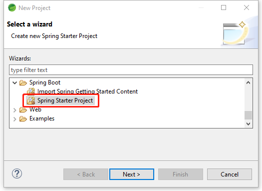
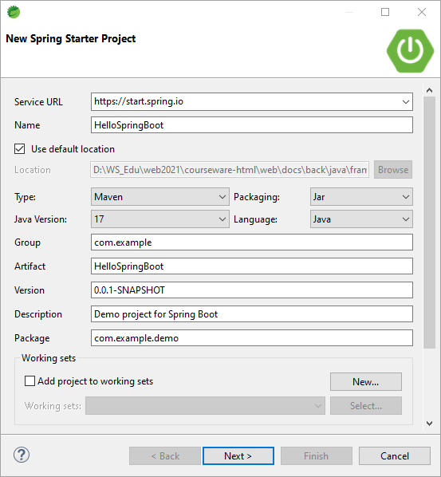
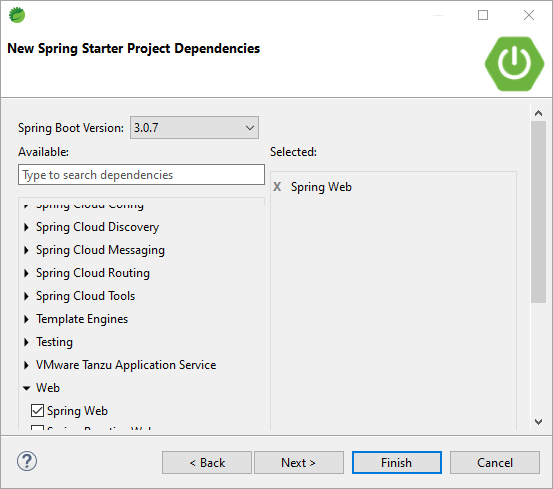

Spring Boot⯐
简介
Spring Boot是一个基于Spring框架的快速开发框架，旨在简化Spring应用程序的开发和部署。（方便使用第三方框架的框架）
它提供了一系列的自动配置和约定，可以帮助开发者快速搭建一个基于Spring的应用程序，减少了开发者的工作量和时间成本。
Spring Boot还提供了一种简单的方式来配置应用程序，开发者只需要在配置文件中定义一些基本的属性，就可以完成大部分的配置工作。
此外，Spring Boot还提供了一系列的starter，可以帮助开发者快速集成常用的第三方库，例如数据库、消息队列、缓存等。
Spring Boot应用程序可以打包成一个可执行的JAR文件，可以方便地部署到各种环境中，例如本地开发环境、测试环境、生产环境等。
总之，Spring Boot可以帮助开发者快速构建高效、可靠、安全的应用程序，提高开发效率和应用程序的质量。
Spring Boot组件及第三方库
在STS或Spring Boot Initializer创建工程向导中，支持的框架集成可以分为以下几类：
| 框架分类 | 框架名称 |
|---|---|
| Web框架 | Spring MVC、Spring WebFlux、Spring Boot Actuator、Spring Security、Spring Session |
| 数据库框架 | MyBatis、Spring Data JPA、Spring Data MongoDB、Spring Data Redis、Spring Data JDBC |
| 模板引擎框架 | FreeMarker、Thymeleaf、Velocity、Beetl、Pebble |
| 依赖管理工具 | Maven、Gradle-Groovy、Gradle-Kotlin |
| 消息队列框架 | Spring for Apache Kafka、Spring AMQP、Spring Integration、Spring Cloud Stream、Spring Cloud Bus |
| 缓存框架 | Spring Cache、Spring Data Redis、Ehcache、Hazelcast、Infinispan |
| 安全框架 | Spring Security、Apache Shiro、Spring Vault、Spring Cloud Security、Keycloak |
| 日志框架 | Log4j、Logback、Slf4j、Java Util Logging、Apache Commons Logging |
| 测试框架 | JUnit、Mockito、Spring Test、Selenium、TestNG |
| 分布式框架 | Spring Cloud、Dubbo、Zookeeper、Consul、Etcd |
| 任务调度框架 | Quartz、Spring Batch、Elastic Job、xxl-job、TBSchedule |
| RPC框架 | Dubbo、gRPC、Thrift、Hessian、Spring Remoting |
| API文档框架 | Swagger、Springfox、Spring REST Docs、Apiary、RAML |
| 消息推送框架 | Spring WebSockets、SockJS、STOMP、Atmosphere、CometD |
以上仅是一些常见的框架，实际上还有很多其他的框架可以选择。
动机
使用Spring Boot的动机主要有以下几点：
-
快速开发
- Spring Boot提供了一系列的自动配置和约定，可以帮助开发者快速搭建一个基于Spring的应用程序，减少了开发者的工作量和时间成本。
-
简化配置
- Spring Boot提供了一种简单的方式来配置应用程序，开发者只需要在配置文件中定义一些基本的属性，就可以完成大部分的配置工作。
-
集成第三方库
- Spring Boot提供了一系列的starter，可以帮助开发者快速集成常用的第三方库，例如数据库、消息队列、缓存等。
-
易于部署
- Spring Boot应用程序可以打包成一个可执行的JAR文件，可以方便地部署到各种环境中，例如本地开发环境、测试环境、生产环境等。
-
易于维护
- Spring Boot提供了一系列的监控和管理工具，可以帮助开发者快速定位和解决问题，提高应用程序的可维护性和可靠性。
综上所述，使用Spring Boot可以帮助开发者快速构建高效、可靠、安全的应用程序，提高开发效率和应用程序的质量。
原理
Spring Boot的基本原理可以概括为以下几点：
-
自动配置
- Spring Boot通过自动配置来简化应用程序的开发和部署。它会根据应用程序的依赖关系和配置文件中的属性，自动配置应用程序的各种组件和功能，例如数据源、Web服务器、消息队列等。
-
起步依赖
- Spring Boot通过起步依赖来简化应用程序的依赖管理。它会根据应用程序的需求，自动引入所需的依赖库和版本，避免了手动管理依赖的繁琐和错误。
-
约定优于配置
- Spring Boot通过约定优于配置来简化应用程序的配置。它会根据应用程序的结构和命名规范，自动识别和配置应用程序的各种组件和功能，避免了手动配置的繁琐和错误。
-
基于Spring框架
- Spring Boot是基于Spring框架的，它继承了Spring框架的优秀特性和生态系统，例如IoC容器、AOP、JDBC、ORM等。同时，它还扩展了Spring框架的功能和应用范围，例如WebFlux、Actuator、Spring Cloud等。
-
可扩展性
- Spring Boot提供了丰富的扩展点和插件机制，可以方便地扩展和定制应用程序的功能和行为。例如，开发者可以通过自定义starter来扩展Spring Boot的功能，或者通过自定义自动配置来定制应用程序的行为。
发展历程
Spring Boot的发展历程可以分为以下几个阶段：
-
2013年：Spring Boot项目正式启动，旨在简化Spring应用程序的开发和部署。
-
2014年：Spring Boot 1.0版本发布，引入了自动配置、起步依赖等特性，大大简化了Spring应用程序的开发和部署。
-
2015年：Spring Boot 1.2版本发布，引入了Actuator、Devtools等特性，增强了应用程序的监控和管理能力。
-
2016年：Spring Boot 1.4版本发布，引入了多种新特性，例如Spring Cloud、Spring Security等，进一步扩展了Spring Boot的功能和应用范围。
-
2017年：Spring Boot 2.0版本发布，引入了对Java 9和Java EE 8的支持，同时升级了多个依赖库，提高了应用程序的性能和稳定性。
-
2018年：Spring Boot 2.1版本发布，引入了多种新特性，例如WebFlux、Kotlin支持等，进一步提高了应用程序的性能和开发效率。
-
2019年：Spring Boot 2.2版本发布，引入了多种新特性，例如Micrometer、RSocket支持等，进一步扩展了Spring Boot的功能和应用范围。
常见注解
以下是常用的注解及其功能：
| 注解名称 | 功能 |
|---|---|
| @SpringBootApplication | 声明一个Spring Boot应用程序 |
| @Controller | 声明一个控制器类 |
| @RestController | 声明一个控制器类，并将其所有方法的返回值转换为JSON格式 |
| @RequestMapping | 映射请求路径和请求方法 |
| @GetMapping | 映射HTTP GET请求路径和请求方法 |
| @PostMapping | 映射HTTP POST请求路径和请求方法 |
| @RequestParam | 获取请求参数 |
| @PathVariable | 获取路径变量 |
| @ResponseBody | 将返回值转换为JSON格式 |
| @RequestBody | 将请求体转换为对象 |
| @Valid | 验证请求参数 |
| @Autowired | 自动装配Bean |
| @Service | 声明一个服务类 |
| @Mapper | 声明一个MyBatis Mapper接口 |
Hello World!
开发环境
-
使用Eclipse开发；默认支持Java Web应用
需要额外安装Spring Boot等插件
-
使用STS（Spring Tool Suite）默认支持Spring Boot应用
STS是一个专为Spring开发定制的Eclipse，方便创建、调试、运行及维护Spring应用。通过该工具，可以很方便地生成一个Spring工程，比如Web工程。
创建Spring Boot Web工程
在STS中创建新工程，选择Spring Starter Project向导

输入工程基本信息：
- Service URL: https://start.aliyun.com
- Name: HelloSpringBoot

为工程选择Spring Web依赖，支持Spring及Spring MVC

向导完成后生成的目录结构如下：
工程创建向导完成后，Mavan配置文件pom.xml的关键依赖如下：
源代码
在com.example.demo下创建类HiController：
源代码
| HelloSpringBoot/src/main/java/com/example/demo/HiController.java | |
|---|---|
在浏览器访问http://localhost:8080/hi，结果如下：